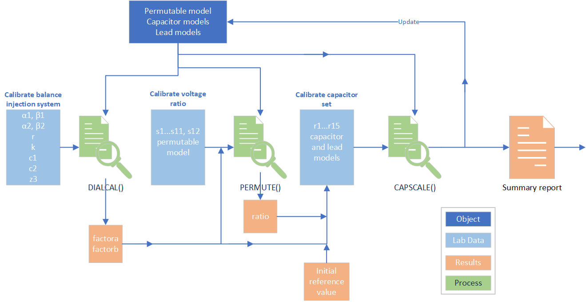
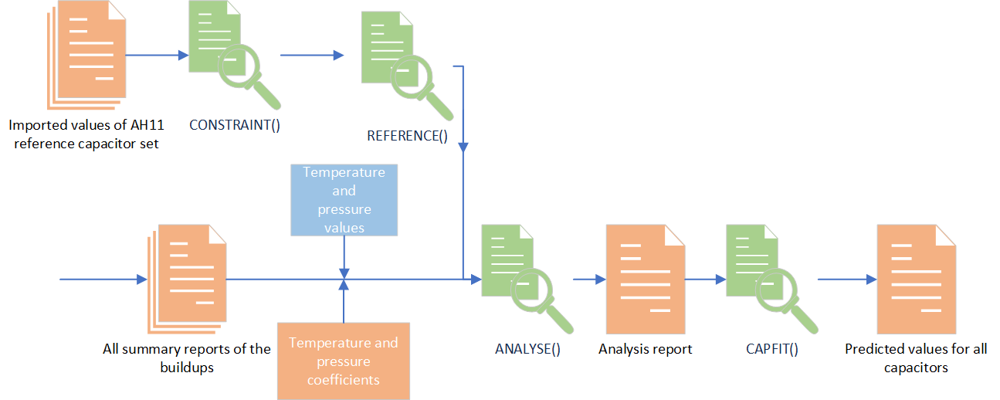
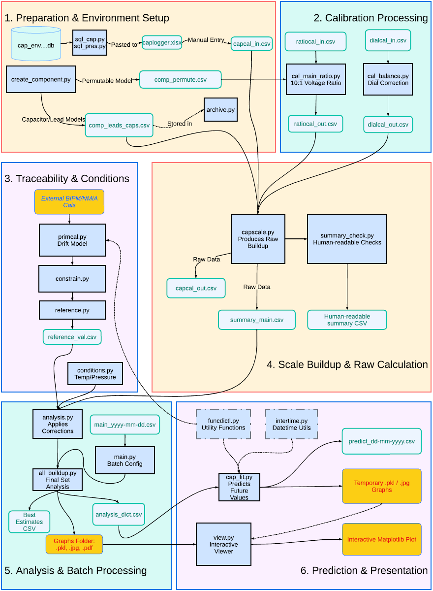

Capacitance Scale documentation¶
This guide explains where and how to enter the data required for processing with the Python software collected in the CapacitanceScale project. Details of the code are not described here. While significant improvements to the software are planned this guide focuses on the current state when MSLT.E.005.04 is validated, with a matching GitHub release. The general flow of data gathering and processing is shown below where the light green processes are labelled with the key Python class that implements the process.

This software version has evolved (since E.005.03) to incorporate temperature and pressure corrections, alternative balance schemes for the 0.5 pF capacitor, batch processing of historical data, graphing of data, fitting to data to facilitate short term prediction of capacitor values. This replaces analysis steps previously carried out in Excel spreadsheets. Extensive use of intermediate csv files means that spreadsheet views can be generated if required. The figure below captures these additional processes, focussing on the python classes (in green) that hold the relevant calculation methods.

Components¶
For each capacitance scale buildup, the current basic characteristics of the key components need to be available. These characteristics are generally measured with an LCR meter.
Capacitors¶
Measurements are carried out on capacitors defined as two terminal-pair components. It is assumed that the admittances to case, both at the high and low voltage terminals (yhv and ylv) are relatively stable with time so do not need routine remeasurement. These admittances only have a second-order impact on the two terminal-pair value of the capacitor. A CAPACITOR object is defined in components.py with a name, nominal capacitance value (capacitance, conductance), yhv (capacitance, conductance), ylv (capacitance, conductance), angular frequency, relative uncertainty (of yhv and ylv), and the option of key word arguments. CAPACITOR objects are created by running create_component.py that stores the objects in a csv file. The values are hard coded in the create_capacitors() method and so the code needs modification if new values are required. The ‘best value’ of a CAPACITOR will be updated after analysing the results of a scale buildup, but the port admittances remain unaltered.
Leads¶
Bridge components are connected by coaxial cables that are treated as two-port networks implemented as LEAD objects in components.py. Each lead has a name, short-circuit series impedance, open-circuit admittance, angular frequency, and a common relative uncertainty for the two values. LEAD objects are created by running create_component.py that stores the objects in a csv file. The values are hard coded in the create_leads() method, and the objects are stored in the same csv file as the CAPACITOR objects. Note that the 100:1 transformer is treated as a LEAD object when it is placed in series with the capacitor on the low voltage side of the capacitance bridge. For each set of ratio measurements when building up the scale there needs to be a corresponding comp_leads_caps_yyy-mm-dd.csv file.
Permutable Capacitor¶
While the permutable capacitor is essentially a set of two terminal-pair capacitors, its internal switching makes it unique, and its relevant parameters are hard-coded in the create_permutable() method CREATOR of create_component.py and stored in comp_permute_yyyy-mm-dd.csv. Note that the values of the individual permutable capacitors do change over time. It is efficient to update these directly in the csv file.
Calibration of Voltage Ratios¶
Balance Injection¶
Calculating the correction factors for the balance injection dials is done by cal_balance.py using data entered in the file dialcal_in_yyyy-mm-dd.csv. There is no script for creating this file, but it does not take long to edit a previous version with the IVD settings, the measured dc value of the Thompson resistor and its parallel capacitance. Be careful not to change any of the quotation marks as they are critical for correctly reading the dictionary.
Date,07-Jul-25
Reference,E005 Cap. Scale, p.64, 100k #4
w,1.00E+04
alpha1,"{""x"": 0.999759, ""u"": 2e-06, ""df"": Infinity, ""label"": ""alpha1""}"
beta1,"{""x"": -0.000658, ""u"": 2e-06, ""df"": Infinity, ""label"": ""beta1""}"
alpha2,"{""x"": -0.002058, ""u"": 2e-06, ""df"": Infinity, ""label"": ""alpha2""}"
beta2,"{""x"": 1.002480, ""u"": 2e-06, ""df"": Infinity, ""label"": ""beta2""}"
r,0.01
k,0.2
c1,es14
c2,gr1000a
label y3,100k4
r3,100.198225e3
ur3,0.1
c3,0.028e-12
uc3,0.001e-12
Main Transformer 10:1 Calibration¶
There are 12 sets of dial readings (alpha, beta) labelled s1 to s12, one for each of the eleven switch settings and a final repeat of the first switch setting. Each dial reading is entered as a number where ’ X’ in the first dial is equivalent to 1.0. Positive settings do not have a ‘+’ sign while negative settings do have the ‘-‘ sign. There is no space following any of the commas. The first line is the date, the second line a free form description of where to find the original manual entry, the third line is the angular frequency (always 1e4). The file name is in the format ‘ratio_cal_in_yyyy-mm-dd.csv’.
Date,4 October 2019
Reference,KJ Lab Diary2 p.103
w,1e4
s1,-0.165950,0.168400
s2,0.091620,0.169830
s3,0.112840,0.168200
s4,-0.000240,0.171100
s5,0.250430,0.164400
s6,-0.009850,0.167500
s7,-0.088980,0.168590
s8,-0.024880,0.170900
s9,-0.136700,0.170220
s10,-0.202040,0.168710
s11,-0.016080,0.168960
s12,-0.165950,0.167360
It is most efficient to copy a previous set and to edit the date, reference and numbers. The csv reader is unforgiving of extra spaces or unexpected characters (e.g. +).
Scale Buildup Measurements¶
Ratio Measurements¶
There is no flexibility in the software for including capacitance ratios or capacitors other than those described in the procedure, r_1 to r_15, and the connecting leads must be as in the procedure. The only connection variations accommodated are for the measurement of the 0.5 pF capacitor, ES14. Lab book data is transferred to a file named ‘capcal_in_yyyy-mm-dd.csv’. The format is similar to the permutable file but note the three options for the 0.5 pF measurement that are entered on the second line. Do not put a space after the comma.
Reference,p 88 E005 cap scale
Reference,p 88 E005 cap scale,cap inject 5
Reference,p 88 E005 cap scale,cap inject 10
Option 1 is for earlier measurements with the in-line 100:1 transformer.
Option 2 is for the now usual use of the alternative sapphire ball 5 pF capacitor being connected to the 10:1 transformer.
Option 3 is for the one occasion when the General Radio 10 pF capacitor was used
Date,21-Nov-25
Reference,p 88 E005 cap scale,cap inject 5
w,1.00E+04
r1,-0.113983,0.016387
r2,-0.081583,0.016357
r3,0.090573,-0.138057
r4,0.011073,-0.152057
r5,0.013603,-0.164357
r6,0.012143,-0.140357
r7,0.010363,-0.141017
r8,0.214803,-0.163567
r9,0.011163,-0.150847
r10,0.009163,-0.145777
r11,0.012863,-0.160247
r12,0.002663,-0.157847
r13,-0.418463,-0.154957
r14,-0.327003,-0.106067
r15,-0.157873,-0.103697
Conditions
AH1,29.9,0.029
AH2,29.4,0.029
GRin,23.63237,0.000199
GRout,23.60632,0.000198
AB1,21.05,0.01
Sball,23.45592,0.002913
Perm,23.14318,0.001711
Barom,1019.63,0.01
The lower section of the csv file has the values of the influence variables in the format
Name, value, standard uncertainty
At present the AB1 (air bath 1) is just a placeholder with a dummy value. The ‘GRout’ and ‘Perm’ values are not used in the calculation.
Influence Variables¶
It is essential that the temperatures of the two AH11s, the inner temperature of the General Radio enclosure, the temperature of the sapphire ball oil bath and the atmospheric pressure are recorded during the buildup measurements. It is acceptable to rely on manual readings of the front panel display of the AH11 chassis temperatures and the screen display of the Vaisala barometer. Other temperatures are logged from a multiplexed HP34970 meter using a local Windows 7 laptop. It is essential that this system is operating, preferably on the 5-minute interval, while measurements are being made. At present the SQLite database file is ‘cap_environment_May_2022_on.db’ and this should be copied off the laptop before starting the analysis of the measurements. The caplogger2014 project uses sql_cap.py to extract the values in a specified range, e.g.
date_tuples_2 = [('19 September, 2019, 9:00 AM', '19 September, 2019, 4:00 PM')]
sql = SQLDATA('LoggerData\cap_environment_August_2019_on.db')
The text output from running sql_cap.py is pasted into the ‘text_python_console’ worksheet of ~ElectricityOngoingFaradImportingCapacitanceNMIAcaplogger.xlsx before being manually pasted, number by number, into the ‘table’ worksheet. This spreadsheet maintains a record of the buildup runs in the ‘buildups’ worksheet. This spreadsheet is the source for manual entry into ‘capcal_in_yyyy-mm-dd.csv’. Direct editing of the code is required to enter new date ranges.
A near identical approach is taken with sql_pres.py where the database is taken from the electrical laboratory logging system still uses SQLite, but with minor differences in the tables.
date_tuples_2 = [
('3 July, 2025, 1:00 AM', '3 July, 2025, 4:00 PM'),
('4 July, 2025, 9:00 AM', '4 July, 2025, 4:00 PM'),
('7 July, 2025, 9:00 AM', '7 July, 2025, 4:00 PM'),
('8 July, 2025, 9:00 AM', '8 July, 2025, 4:00 PM'),
('11 July, 2025, 9:00 AM', '11 July, 2025, 4:00 PM'),
('23 October, 2025, 9:00 AM', '23 October, 2025, 4:00 PM'),
('28 October, 2025, 9:00 AM', '28 October, 2025, 4:00 PM'),
('3 November, 2025, 9:00 AM', '3 November, 2025, 4:00 PM'),
('6 November, 2025, 9:00 AM', '6 November, 2025, 4:00 PM'),
('21 November, 2025, 9:00 AM', '21 November, 2025, 4:00 PM'),
('1 December, 2025, 9:00 AM', '1 December, 2025, 4:00 PM'),
('5 December, 2025, 9:00 AM', '5 December, 2025, 4:00 PM')
]
sql = SQLDATA_P('LoggerData\druck.db')
The code is available at metrologist/caplogger2014 with a release tagged to MSLT.E.005.04.
Influence Coefficients¶
Estimations of temperature and pressure coefficients have been made for several of the capacitors.
Temperature coefficients for AH11#1 are recorded in ElectricityOngoingFaradImportingCapacitanceAH11_properties.xlsx. The AH11#2 temperature coefficients have not been measured. The AH11#1 coefficients are hard coded in the REFERENCE class of reference.py, along with the external calibration values that underpin the whole capacitance scale.
Temperature and pressure coefficients for the General Radio and sapphire ball capacitors have been estimated in ElectricityOngoingFaradLabShiftAH2700A checks KJ_GH.xlsx, from fits shown on the ‘Summary’ worksheet. These estimates have been hard coded in the add_influence() method of ANALYSE in analysis.py. This is also where the standard conditions of 1000 mbar and 29 °C or 23 °C are assigned to the capacitors.
Calculation¶
The preferred approach is to calculate the whole history of buildups together with the current new run so that the latest result is easily presented in the context of the previous results. Alternatively, it is possible to run the individual steps in isolation with minor editing of the “if __name__ == ‘__main__’:” part of the modules.
Data Selection¶
For each buildup a csv file is created that identifies the input and output files needed to complete the calculation. Naming convention for this file is main_yyyy-mm-dd.csv. This main file is structured as
Working directory,bridge_data\October2025
Dial input,dialcal_in_2025-07-11.csv
Dial output,dialcal_out_2025-07-11.csv
Permutable,comp_permute_2025-02-07.csv
Ratio input,ratiocal_in_2025-11-26.csv
Ratio output,ratiocal_out_2025-11-26.csv
Scale input,capcal_in_2025-12-05.csv
Scale output,capcal_out_2025-12-05.csv
Leads and caps,comp_leads_caps_2025-07-11.csv
Reference,reference_val_2021-08-24.csv
The date of the main file should match the date of the capcal_in file, but there is the flexibility to choose the most appropriate data files for the dial factors etc. Note that the choice of reference (last line) is relatively unimportant as the full analysis later corrects for the most up to date values of the reference set of AH11 capacitors, however this is where the loss angle (determined by NMIA) is entered. For example reference_val_2021-08-24.csv has
w,1e4,rad/s
cap,99.9995864e-12,pF
ucap,0.11e-6,relative expanded uncertainty k = 2
dfact,1.9e-6,dissipation factor S/F/Hz
udfact,0.6e-6,S/F/Hz k=2
The most recent main csv file is then added to the files list in the main.py which uses the BATCH class in all_buildup.py
files = [r'main_2019-09-19.csv',
r'main_2019-10-04.csv',
r'main_2019-11-15.csv',
-
-
-
r'main_2025-10-23.csv',
r'main_2025-10-28.csv',
r'main_2025-11-06.csv',
r'main_2025-11-21.csv',
r'main_2025-12-01.csv',
r'main_2025-12-05.csv']
Results¶
Running all_buidlup.py produces graphs of capacitor values and a csv file of the best estimates of the capacitance (in relative ppm) and conductance (in nano siemen) at a common temperature and pressure. These are the results that are used to provide estimates of the capacitor values between scale buildups. The graphs (in the graph folder) are the ‘AH11set’ for the eight Andeen Hagerling capacitor and the ‘GR and S ball set’ for the eight original General Radio and sapphire ball capacitors. Each graph is produced in jpg, pdf, and pkl. The first two are fixed images but the pkl file can be viewed interactively using view.py which gives the usual matplotlib tools. The pkl file only works if it is created and viewed in the same python environment and so is not a good option for archiving. It is useful for later reviewing the results in detail without needing to rerun the entire calculation. Note that the file name needs to be entered in the code.
Traceability¶
External calibrations of the AH11#1 set of capacitors underpin the entire scale. The assumption is that the mean relative value of the four capacitors will exhibit a slow linear drift with time. External calibrations are used to estimate that drift. The calculations made in the scale buildup force the mean relative values to the predicted drift value and all the other capacitors are measured relative to that value. External calibration values are hard coded into REFERENCE in reference.py. Manually entered values are highlighted in green. Note that the 2009 measurements by BIPM have been modified in response to changes in the SI. This version shows the option of artificially reducing the uncertainty by a factor of four for the most recent external calibration so that the fitted line is weighted to the most recent value.
class REFERENCE():
def __init__(self): # built in external calibrations
fn_set = FUNCDICTL()
std_temperature = 29
cap1 = [('Mar 19 2009', (9.999950922, 0.000000400, 50, 31.4)),
('Jul 20 2019', (9.9999500, 0.000000550, 50, 27.0)),
('Jul 31 2025', (9.9999513, 0.00000070/4, 50, 27.75))
]
coefficient1 = 0.003086584
equation1 = fn_set.f_dict['func1'] # FUNCDICT version
cap2 = [('Mar 19 2009', (9.999953022, 0.000000400, 50, 31.4)),
('Jul 20 2019', (9.9999526, 0.000000550, 50, 27.0)),
('Jul 31 2025', (9.9999540, 0.00000070/4, 50, 27.75))
]
coefficient2 = 0.004026581
equation2 = fn_set.f_dict['func1'] # FUNCDICT version
cap3 = [('Mar 19 2009', (99.999557221, 0.000004000, 50, 31.4)),
('Jul 20 2019', (99.999580, 0.000005500, 50, 27.0)),
('Jul 31 2025', (99.999564, 0.0000070/4, 50, 27.75))
]
coefficient3 = -0.001883384
equation3 = fn_set.f_dict['func1'] # FUNCDICT version
cap4 = [('Mar 19 2009', (99.999548221, 0.000004000, 50, 31.4)),
('Jul 20 2019', (99.999567, 0.000005500, 50, 27.0)),
('Jul 31 2025', (99.999584, 0.0000070/4, 50, 27.75))
]
coefficient4 = -0.003210803
equation4 = fn_set.f_dict['func1'] # FUNCDICT version
Future external calibrations will be required to refine the drift model.
It is convenient to use constrain.py to view the drift model and look at the consequences of altering weighting. In this case the values are entered in the ‘__main__’ part of the script.
Prediction¶
The history of capacitor measurements as presented in the results csv file forms the basis for predicting future values. The uncertainties in the predicted values will increase over time. A repeat scale buildup is required when these uncertainties become larger than what is required, particularly for calibrating the Universal Bridge. Values are predicted using cap_fit.py relying on the measurement results in analysis_dict.csv produced by all_buildup.py. Judgement is required as to whether the results of the fitted function appear reliable within the calculated uncertainty. There is an automatic adjustment of prediction uncertainty depending on the quality of the fit as determined by χ^2. Running cap_fit.py creates a graph for each capacitor that only displays for two seconds but can be interactively viewed again using view.py. Both the jpg and pkl versions are saved in the graphs folder. A single prediction date is hard-coded
if __name__ == '__main__':
date_for_prediction = '19 July 2026'
c =CAPFIT(date_for_prediction)
dict_list = c.load_file() # extract dictionaries
plt.ion() # the interactive mode must be on for close() to work
for index in range(len(dict_list)):
print(dict_list[index]['name'])
c.fitting(dict_list[index])
Python Scripts¶
Script |
Purpose |
|---|---|
main.py |
edited to select files for all_buildup.py |
all_buildup.py |
final analysis of a set of buildups |
analysis.py |
reprocesses raw buildup results with corrections for the constraint and influence quantities |
archive.py |
general storage of GTC values and dictionaries in csv files |
cal_balance.py |
calculates correction factors for the main balance amplifier |
cal_main_ratio.py |
calculates the 10:1 voltage ratio |
cap_fit.py |
analyses historical values of all the capacitors |
capscale.py |
produces raw results from a buildup |
components.py |
objects that contain properties of capacitors and leads (COMPONENT) |
conditions.py |
manages the dictionary of temperature and pressure measurements |
constrain.py |
manages external calibration values |
create_component.py |
creates csv files for a COMPONENT |
funcdictl.py |
utility to define functions for MSL-NLF module |
intertime.py |
utility to convert between different representations of time |
primcal.py |
supports reference.py |
reference.py |
uses external calibrations to predict values of the reference AH11 |
sql_cap.py |
extracts temperatures from the capacitance logging system [in caplogger2014] |
sql_pres.py |
extracts atmospheric pressure from the laboratory logging system |
summary_check.py |
summarises output of capscale.py before final processing |
view.py |
viewer for graphs produced by all_buildup.py |
Overview of how the scripts connect¶
This diagram summarises the overall process showing the role of the various python scripts and data files. It is complementary to the initial diagram that focussed on the classes.

Python¶
This version is run with Python 3.14.0 and uses GTC version 1.5.1. See pyproject.toml for more information.
Documentation¶
This document has been produced by sphinx 9.1.0 installed in the GTC3 environment. Updating this document requires that the .rst files are updated in the /source directory of the project file. Next using the miniconda text console activate the GTC3 environment (where Sphinx is installed), navigate to the project directory and run >make html. This runs make.bat that creates the document in the /build/html folder, accessed by opening index.html. Note that restructured text files have strict format and command requirements so remember to check that your modifications appear correctly in the new html files. The /source directory also contains conf.py. This can be edited to alter the source directory for the project as well as the settings for extensions and themes used by Sphinx.
Testing¶
Testing has not yet been set up for this version.
[Old scripts and data for testing are in the testing folder. The test suite is run from the miniconda command line by navigating to CapacitanceScaletests folder and running pytest.]
Python Code¶
Comment strings extracted from the code.
all_buildup.py¶
- class all_buildup.BATCH(main_list, folder)¶
- __init__(main_list, folder)¶
Each data set from a buildup as collected in the csv files in the run_lists folder is processed so that the values of all the capacitors are linked to the externally calibrated set of AH11 capacitors. :param main_list: a list of all the main_yyyy-dd_x.csv lists of input data :param folder: the folder that holds this set of files
- execute()¶
Steps through each of the main files to do all the buildup calculations with results stored in csv files including a summary file for each buildup.
- Returns:
a list of summary files for each buildup
analysis.py¶
- class analysis.ANALYSE(file_list)¶
- __init__(file_list)¶
picks up a set of summary_main.csv files and normalises all capacitor values to a chosen constraint this replaces the need to copy and paste from csv into xlsx for generating lists and graphs :param file_list: the list of run_lists files that collect the data file set for each buildup
- add_influence()¶
Add influence coefficients (temperature and pressure) and standard conditions for each capacitor. :return:
- all_sumry()¶
all dictionaries are updated to include all measured values :return:
- corrected_dict()¶
put the corrected ppm values (at the buildup conditions) in the dictionaries :return:
- corrected_to_std(meas, meas_con, std_con, coeff)¶
generic method for any linear sensitivity :param meas: the measured value in ppm :param meas_con: the temperature or pressure at measurement :param std_con: the standard temperature or pressure we want to report at :param coeff: the sensitivity coefficient in ppm per unit :return: the ppm value at standard conditions
- corrected_to_std_con()¶
Takes the dictionary ‘cppm’ values (corrected for restraint) and adds a ‘std_value’ to the dictionary. The standard value is the ppm capacitance value at the standard temperature and pressure for that component. :return: updates the component dictionaries in this class
- extract_key_data(block)¶
Improve to avoid use of row numbers and to also pick up the environmental conditions :param block: :return:
- find_correction()¶
invoke the constraint put on AH11 set 1 to shift the values of all capacitors assumes that the dictionaries are already loaded with the summary results assumes that the dates are common for the whole capacitor set :return: a list of ppm corrections that should be applied to all the caps
- for_plot_cor(cap_dict)¶
create lists for a capacitor that can be added to plots as required :param cap_dict: one of the capacitance dictionaries :return:
- fully_corrected_dict()¶
Correct all values back to standard temperature and pressure. :return:
- load_dict(val_block, date, cond_block)¶
- Parameters:
val_block
date
cond_block
- Returns:
sets values for self.all_dict and self.cond_dict
- load_file(file_name)¶
generic conversion of csv into a list of rows :param file_name: :return: block
- out_block()¶
create a list of lists making up the rows for a simple block of corrected results for all the capacitors :return:
- plot(set, title)¶
- Parameters:
set
- Returns:
- std_temp_correct(std_val, act_temp, temp_co)¶
For converting the constraint values of AH1 to the value at the build-up temperature. Capcitance value is in ppm and the temperature coefficient is in ppm/ degree celsius :param std_val: value at the standard temperature. :act_temp: actual temperature :param temp_co: temperature coefficient of capacitor. :return: value at the scale build-up temperature
- store_dicts()¶
Stores the capacitor dictionaries for use by cap_fit.py, converting temperature and pressure coefficients from simple ureal to a tuple (x, u). :return:
archive.py¶
Developed prior to latest GTC development for storing uncertain numbers. These utility classes make it easy to store uncertain numbers and LEAD and CAPACITOR objects as JSON strings in a csv file.
- class archive.GTCSTORE¶
- dict_to_ucomplex(unc_dict)¶
Takes a dictionary created by ucomplex_to_dict and creates a GTC uncertain complex.
- Parameters:
unc_dict – dictionary of parts of a GTC uncertain complex.
- Returns:
GTC uncertain complex
- dict_to_ureal(unr_dict)¶
Takes a dictionary created by ureal_to_dict and creates a GTC uncertain real.
- Parameters:
unr_dict – dictionary of parts of a GTC uncertain real.
- Returns:
GTC uncertain real
- json_to_ucomplex(unc_json)¶
Takes a json string created by ucomplex_to_json and creates a GTC uncertain complex.
- Parameters:
unc_json – json string of a dictionary of parts of a GTC uncertain complex.
- Returns:
GTC uncertain complex
- json_to_ureal(unr_json)¶
Takes a json string as created by ureal_to_json and creates a GTC uncertain real.
- Parameters:
unr_json – a json string of a dictionary of parts of a GTC uncertain real.
- Returns:
GTC uncertain real
- read_gtc(gtc_file)¶
Reads json strings in a csv file
- Parameters:
gtc_file – full name of a csv file
- Returns:
a list of json strings
- read_gtc_real(gtc_file)¶
Reads json strings in a csv file
- Parameters:
gtc_file – full name of a csv file
- Returns:
a list of gtc uncertain reals
- save_gtc(gtc_list, gtc_file)¶
Stores json strings in a csv file
- Parameters:
gtc_list – a list of json strings
gtc_file – full name of a csv file
- Returns:
opens file, saves and closes before return
- save_gtc_real(gtc_list, gtc_file)¶
Stores json strings in a csv file
- Parameters:
gtc_list – a list of gtc uncertain reals
gtc_file – full name of a csv file
- Returns:
opens file, saves and closes before return
- ucomplex_to_dict(unc, **kwargs)¶
Turns a GTC uncertain complex into a dictionary of its parts suitable for json storage. Retains nothing of the structure that created the uncertain real. A more useful label can be used if, for instance, it is an intermediate result.
- Parameters:
unc – a GTC uncertain complex
kwargs – ‘new_label’ if wanted
- Returns:
a dictionary with all the necessary parts of the ureal
- ucomplex_to_json(unc, **kwargs)¶
Turns a GTC uncertain complex into a json string of a dictionary of its parts suitable for json storage. Retains nothing of the structure that created the uncertain real. A more useful label can be used if, for instance, it is an intermediate result.
- Parameters:
unc – a GTC uncertain complex
kwargs – ‘new_label’ if wanted
- Returns:
a json string with all the necessary parts of the ureal
- ureal_to_dict(unr, **kwargs)¶
Turns a GTC uncertain real into a dictionary of its parts suitable for json storage. Retains nothing of the structure that created the uncertain real. A more useful label can be used if, for instance, it is an intermediate result.
- Parameters:
unr – a GTC uncertain real
kwargs – ‘new_label’ if wanted
- Returns:
a dictionary with all the necessary parts of the ureal
- ureal_to_json(unr, **kwargs)¶
Turns a GTC uncertain real into a dictionary of its parts and then into a json string for storage. Retains nothing of the structure that created the uncertain real. A more useful label can be used if, for instance, it is an intermediate result.
- Parameters:
unr – a GTC uncertain real
kwargs – ‘new_label’ if wanted
- Returns:
a json string with all the necessary parts of a dictionary to make a ureal
- class archive.COMPONENTSTORE¶
- __init__()¶
Uses GTCSTORE methods to save LEAD and CAPACITOR objects as JSON strings in CSV files. The methods are accessed through self.gs
- capacitor_to_dict(cap)¶
Converts a CAPACITOR object into a dictionary.
- Parameters:
cap – a CAPACITOR object
- Returns:
a dictionary of CAPACITOR components
- dict_to_capacitor(filed)¶
Recovers a CAPACITOR object from a dictionary created by capacitor_to_dict.
- Parameters:
filed – a dictionary created by capacitor_to_dict
- Returns:
a CAPACITOR object
- dict_to_lead(filed)¶
Recovering a LEAD object from a dictionary.
- Parameters:
filed – a dictionary that was created by lead_to_dict
- Returns:
LEAD object
- lead_to_dict(lead)¶
Converts a LEAD object into a dictionary
- Parameters:
lead – a LEAD object
- Returns:
a dictionary of LEAD components
cal_balance.py¶
Calibrates the dials used for the alpha and beta values of all ratio measurements.
- class cal_balance.DIALCAL(file_path, input_file_names, output_file_name)¶
- __init__(file_path, input_file_names, output_file_name)¶
Calibration of the main balance amplifier requires two sets of input data. The first set primarily balances the alpha dial at full scale. The second set primarily balances the beta dial at full scale. Calibration is at the single frequency of 10000 radians per second. See Appendix A1 of E.005.03. Each data set comprises
k: the setting of the 7 dial IVD r: the ratio of the injection transformer used Y1: the capacitor connected to the 7 dial IVD Y2 or Y3: the capacitor or resistor connected to the balance dials (alpha at 1, beta at 1 respectively) alpha and beta dial settings for balance
- Parameters:
file_path – directory for data in/out
input_file_names – list of csv files [dial settings and component names, components]
output_file_name – output can be stored in this csv file (same directory)
- dialfactors(**kwargs)¶
This contains the critical calculation.
- Parameters:
kwargs – booleans file_output and append give a choice on whether to produce a file, either append or new
- Returns:
returns the two uncertain complex values of the two dial factors
cal_main_ratio.py¶
Calibrates the 10:1 voltage ratio of the HV to LV side of the capacitance bridges.
- class cal_main_ratio.PERMUTE(file_path, input_file_names, output_file_name, **kwargs)¶
- __init__(file_path, input_file_names, output_file_name, **kwargs)¶
Takes the balance values of a Permutable Capacitor run and returns an uncertain complex value for the main 10:1 ratio.
- Parameters:
file_path – working directory
input_file_names – list of csv files, order sensitive, [balances s1 … s12, leads and caps, cal factors for the main dial (factora, factorb), model compenents as ucomplex impedance/admittance and values in pF of each of the 11 capacitors]
output_file_name
kwargs – ‘afactor’ and ‘bfactor to overide any csv file input values for factora and factorb (redundant?)
- calc_raw_ratio()¶
Implements equations 37 and 46 of E.005.03
- Returns:
10:1 voltage ratio as calculated before correcting for lead and internal impedance effects
- correct_ratio(uncorrected_ratio)¶
Implements equation 45 of E.005.003, applying the correction for the external leads and internal components of the permutable capacitor model.
- Parameters:
uncorrected_ratio
- Returns:
- file_ratio(corrected_ratio)¶
Stores a ucomplex value of the 10:1 ratio in the csv output file
- Parameters:
corrected_ratio – ucomplex value of the 10:1 ratio
- Returns:
ratio is stored in the output files together with meta data
cap_fit.py¶
- class cap_fit.CAPFIT(target_date)¶
- __init__(target_date)¶
- Parameters:
target_date – string e.g. ‘19 July 2026’
- fit_qual(chisq, dof)¶
modified from MIEcalc3, functions.py Checks the chi-square of the fit and returns comments on the quality of the fit and whether the prediction uncertainty of the fit needs to be modified. The decision is based on the hard-coded value of ‘prob’, currently set at 0.1.
If the chi-square has a probability of less than prob of being so small, then it is identified as an “overly good fit, add calibration uncertainty”
If the chi-square has a probability of less than prob of being so large, then it is identified as a “bad fit, add scatter to fit uncertainty”
If the chi-square is seen as likely (1-prob), then the fit is identified as a “good fit, no change to uncertainty”.
- Parameters:
chisq – chisquare value from the fit (not reduced chi-square)
dof – degrees of freedom, no. of points minus number of fitted coefficients
- Returns:
comment on quality of fit
- fitting(selected_dict)¶
Least-squares fit of the capacitance values to the selected function :return:
- load_file()¶
generic conversion of csv into a list of rows :param file_name: :return: a list of dictionaries
capscale.py¶
Measures the ratios of all the capacitors following the steps given in technical procedure E.005.003 to establish values of capacitors from 0.5 pF to 1000 pF.
- class capscale.CAPSCALE(file_path, input_files, output_file_name, ref_value, **kwargs)¶
- __init__(file_path, input_files, output_file_name, ref_value, **kwargs)¶
Takes in all the measurement information from the input files and has methods to calculate the values of all the capacitors in the buildup based on the assumed value of the reference capacitor.
- Parameters:
file_path – the sub-folder that holds all the csv files
input_files – a list of file names for dial factors, 10:1 ratio, leads, capacitors and balance readings
output_file_name – csv file for calculated values of all the capacitors
:param ref_value is the up to date value of AH11C1 (derived from external calibration history) :param kwargs: allows values of ‘afactor’, ‘bfactor’ and ‘ratio’ to be entered directly rather than extracted from the input files. This is used when the whole buildup calculation is done in a single run in main.py. The expected list of measured conditions can also be added.
- buildup()¶
This calculation strictly follows the buildup described in MSLT.E.005.03 where each of the ratio measurements r1…r13 is defined. Any change such as the choice of leads or choice of reference capacitor, will need a new method. It would be best to add methods named, e.g., buildup_2002() rather than to edit this method. Ultimately it should be possible to use **kwargs to manage alternative buildups.
- Returns:
a dictionary of CAPACITOR objects with new ‘best values’ set.
- cap_ratio(balance, cap, inverse)¶
Equation 46,47 of E.005.003
- Parameters:
balance – the tuple of balance dial values
cap – the ‘known’ capacitor in the ratio
inverse – boolean when true to divide capacitor by the ratio
- Returns:
the ‘known’ capacitor value either multiplied or divided by the measured ratio
- store_buildup()¶
Stores the capacitor name, capacitor best value in pF and CAPACITOR object in the output csv file.
- Returns:
saves the output file.
- sum_ratio(bal1, bal2, sum_val)¶
Calculates the value of the two 5 pF capacitors (ES 13 and ES16) from knowing the value of the two in parallel and their difference in ratio when individually balanced against the 0.5 pF (ES14). Equations 19 to 21 of E.005.003. Preferred method is sum_ratio2 that includes the effect of connecting to the injection transformer.
- Parameters:
bal1 – ratio ES14/ES13
bal2 – ratio ES14/ES16
sum_val – the value of the two capacitors in parallel
- Returns:
value of ES13, ES16 and ES14
- sum_ratio2(bal1, bal2, sum_val, cap1, cap2, com_lead)¶
Calculates the value of the two 5 pF capacitors (ES13 and ES16) from knowing the value of the two in parallel and their difference in ratio when individually balanced against the 0.5 pF (ES14). The 5 pF capacitors connect directly to the HV side when measured against a 100 pF capacitor, but are on the LV side with the injection transformer (xfrm LEAD) when being compared to the 0.5 pF capacitor. The Addendum to E005.003 has these formulae.
- Parameters:
bal1 – ratio ES14/ES13
bal2 – ratio ES14/ES16
sum_val – the value of the two capacitors in parallel
cap1 – one of the 5 pF CAPACITOR object ES13
cap2 – the other of the 5 pF CAPACITOR objects ES16
com_lead – the additional common lead when the two 5 pF caps are paralleled on the low voltage side
- Returns:
value of ES13, ES16 and ES14
- sum_ratio3(bal1, bal2, sum_val, cap1, cap2, com_lead)¶
Calculates the value of the two 5 pF capacitors (ES13 and ES16) from knowing the value of the two in parallel and their difference in ratio when individually balanced against the 0.5 pF (ES14). The 5 pF capacitors connect directly to the HV side when measured against a 100 pF capacitor, but are on the LV side when being compared to the 0.5 pF capacitor. The bal1 and bal2 measurements are made with the ‘unused’ 5 pF as the injection capacitor connected to the 10:1 transformer (similar to the permutable bridge). E005.003 does not have these formulae.
- Parameters:
bal1 – ratio ES14/ES13
bal2 – ratio ES14/ES16
sum_val – the value of the two capacitors in parallel
cap1 – one of the 5 pF CAPACITOR object ES13
cap2 – the other of the 5 pF CAPACITOR objects ES16
com_lead – the additional common lead when the two 5 pF caps are paralleled on the low voltage side
- Returns:
value of ES13, ES16 and ES14
- sum_ratio4(bal1, bal2, sum_val, cap1, cap2, com_lead)¶
Calculates the value of the two 5 pF capacitors (ES13 and ES16) from knowing the value of the two in parallel and their difference in ratio when individually balanced against the 0.5 pF (ES14). The 5 pF capacitors connect directly to the HV side when measured against a 100 pF capacitor, but are on the LV side when being compared to the 0.5 pF capacitor. The bal1 and bal2 measurements are made with GR10 as the injection capacitor connected to the 10:1 transformer (similar to the permutable bridge). E005.003 does not have these formulae.
- Parameters:
bal1 – ratio ES14/ES13
bal2 – ratio ES14/ES16
sum_val – the value of the two capacitors in parallel
cap1 – one of the 5 pF CAPACITOR object ES13
cap2 – the other of the 5 pF CAPACITOR objects ES16
com_lead – the additional common lead when the two 5 pF caps are paralleled on the low voltage side
- Returns:
value of ES13, ES16 and ES14
components.py¶
Two terminal-pair equivalent circuits for coaxial leads and capacitors are structured as Python objects. For leads this is a simple series impedance and parallel admittance of the coaxial cable. For capacitors it includes the admittances to screen.
- class components.LEAD(name, series_z, parallel_y, ang_freq, rel_u)¶
- __init__(name, series_z, parallel_y, ang_freq, rel_u)¶
Pi transform of a cable
- Parameters:
name – label to identify cable
series_z – series impedance as tuple of resistance (ohm) and inductance (H)
parallel_y – admittance of cable as tuple of conductance (S) and capacitance (F)
ang_freq – angular frequency in radians per second
rel_u – a default relative uncertainty in the L, R, C values (could be nuanced)
- class components.CAPACITOR(name, nom_cap, yhv, ylv, ang_freq, rel_u, **kwargs)¶
- __init__(name, nom_cap, yhv, ylv, ang_freq, rel_u, **kwargs)¶
- Two terminal-pair capacitor. Components entered as C and G but stored as admittances for the given angular
frequency. The lead corrections is calculated using the nominal value of the capacitor.
- Parameters:
name – label to identify capacitor
nom_cap – the main capacitor as a tuple of conductance and capacitance, nominal value
yhv – additional admittance to screen at the HV terminal as a tuple of G and C
ylv – additional admittance to screen at the LV terminal as a tuple of G and C
ang_freq – angular frequency, w, in radians per second
rel_u – a default 1% relative uncertainty in measured C, G values for yhv and ylv (should nuance?).
kwargs – best_value = the best calculated value as a ucomplex in the build up
- lead_correction(hvlead, lvlead)¶
connects the hv and lv leads to capacitor and calculates the modified value of the capacitor
- Parameters:
hvlead – a LEAD object connected at the high potential terminal 1-2
lvlead – a LEAD object connected at the low potential terminal 3-4
- Returns:
ucomplex correction so that true Y = measured Y + correction
- set_best_value(value)¶
Replaces the instantiated self.best_value with a ucomplex value. This might be a convenience if an updated version of a specific instance of CAPACITOR needs to be stored.
- Parameters:
value – ucomplex admittance value
- Returns:
the best value is reset
- class components.CONNECT(lead1, lead2)¶
- __init__(lead1, lead2)¶
Connects two LEAD objects in series with the assumption that they are two similar coaxial leads differing only in length. This allows the transformer lead to simply be added to the hv lead on the low voltage side of the 10:1 ratio.
- Parameters:
lead1 – LEAD object
lead2 – LEAD object
- class components.PARALLEL(cap1, cap2)¶
- __init__(cap1, cap2)¶
Specifically for putting the two 5 pF capacitors in parallel with the original hv leads in parallel. It is assumed that there is no additional common lead, i.e. they plug directly into the LV transformer and common detector junction.
- Parameters:
cap1 – CAPACITOR object
cap2 – CAPACITOR object
- lead_correction(hvlead, lvlead)¶
Connects the hv and lv leads to capacitor and calculates the modified value of the capacitor
- Parameters:
hvlead – LEAD object for the common hv lead
lvlead – LEAD object for the common lv lead
- Returns:
ucomplex correction so that true Y = measured Y + correction
- set_best_value(value)¶
Replaces the instantiated self.best_value with a ucomplex value. This might be a convenience if an updated version of a specific instance of CAPACITOR needs to be stored.
- Parameters:
value – ucomplex value of admittance
- Returns:
value is set in the PARALLEL object
conditions.py¶
- class conditions.CONDITIONS(expect)¶
- __init__(expect)¶
For carrying the measured conditions through the analysis process. :param expect: List of keys identifying which temperature or pressure measurement
- build_dict_from_block(block)¶
for convenience if a block can be extracted :param block: a list of lists, each being one row of a csv :return:
- build_dict_from_row(row)¶
- Parameters:
row – a text row read in from the capcal_in csv file
- Returns:
- cond_to_json()¶
converts the cond_dict to a json string :return:
constrain.py¶
- class constrain.CONSTRAINT(capa, capb, capc, capd)¶
- __init__(capa, capb, capc, capd)¶
A set of externally calibrated (or independently realised) AH11s is a single instance of CONSTRAINT. :param capa: PRIMCAL 10pF a :param capb: PRIMCAL 10pF b :param capc: PRIMCAL 100 pF c :param capd: PRIMCAL 100 pF d
- plot_ppm()¶
convert all capacitor and fit values to ppm :return:
- predict(date, min_u)¶
Predicts the mean of the relative values of the four capacitors on the given date. :param date: string formatted as ‘Dec 25 1025’ :param min_u: the base uncertainty in ppm … averaging does not reduce the calibration uncertainty :return: prediction: ureal of the mean value of the relative errors in ppm
create_component.py¶
Component creation is not required for routine capacitance scale measurements but is part of the maintenance process when leads are changed or new capacitors brought into the scale.
- class create_component.CREATOR(working_directory, input_files, output_files)¶
- __init__(working_directory, input_files, output_files)¶
Component models are managed with the classes in components.py with the measured values held in various csv files. While it can be convenient to enter new values by directly editing json string representations of ucomplex etc., it is safer to create these files by entering values directly from measurements recorded in lab books. The aim is to ensure that there is always clarity about the source of values for leads and various parasitic immitances. The risk is that hasty editing of files might later lead to difficulties with interpreting historic calculations where old values were simply overwritten with no lasting records kept.
Values need to be entered into this code, but the ultimate intent is to use a GUI for manual data entry and display. All data entered into the GUI would be stored in csv files for processing. In this way the GUI remains a convenience without altering the essential flow of data in from csv files followed by calculation with results placed in csv files.
Some information could be in an input file, but in general only the output file is required.
- Parameters:
working_directory – assume a common working directory
input_files – not yet used as values are in the code and easy to edit
output_files – name chosen to match the purpose
- create_capacitors(header)¶
All the measured values are in the lists created in this method
- Parameters:
header – the string to title the block of capacitors in the output csv
- Returns:
appends to the file created by create_leads
- create_leads(header)¶
All the measured values are in the lists in this method.
- Parameters:
header – single line meta_data
- Returns:
creates a csv file of the lead models
- create_output(header, input_dict_list, new)¶
Generic csv writer
- Parameters:
header – string to include key meta-data
input_dict_list – each dictionary value is written as a row of the key and the value of the key
new – boolean set True for to write a new file or overwrite the file, when False it appends data
- Returns:
the output csv file for the CREATOR object
- create_permutable(permutable_header)¶
Latest values are entered by editing the values in the code for this method.
- Parameters:
permutable_header – string that identifies the source of the information
- Returns:
creates a csv file of the model of the permutable capacitor
- class create_component.CAPACITOR(name, nom_cap, yhv, ylv, ang_freq, rel_u, **kwargs)¶
- __init__(name, nom_cap, yhv, ylv, ang_freq, rel_u, **kwargs)¶
- Two terminal-pair capacitor. Components entered as C and G but stored as admittances for the given angular
frequency. The lead corrections is calculated using the nominal value of the capacitor.
- Parameters:
name – label to identify capacitor
nom_cap – the main capacitor as a tuple of conductance and capacitance, nominal value
yhv – additional admittance to screen at the HV terminal as a tuple of G and C
ylv – additional admittance to screen at the LV terminal as a tuple of G and C
ang_freq – angular frequency, w, in radians per second
rel_u – a default 1% relative uncertainty in measured C, G values for yhv and ylv (should nuance?).
kwargs – best_value = the best calculated value as a ucomplex in the build up
- lead_correction(hvlead, lvlead)¶
connects the hv and lv leads to capacitor and calculates the modified value of the capacitor
- Parameters:
hvlead – a LEAD object connected at the high potential terminal 1-2
lvlead – a LEAD object connected at the low potential terminal 3-4
- Returns:
ucomplex correction so that true Y = measured Y + correction
- set_best_value(value)¶
Replaces the instantiated self.best_value with a ucomplex value. This might be a convenience if an updated version of a specific instance of CAPACITOR needs to be stored.
- Parameters:
value – ucomplex admittance value
- Returns:
the best value is reset
funcdictl.py¶
- class funcdictl.FUNCDICTL¶
- __init__()¶
This packages simple functions together with initial parameter estimates for the coefficients a1, a2 … The ‘nlf’ string must match nlf equation conventions. The functions (i.e. fn1, fn2) are python implementations. It seems a bit excessive, but it helps with using correlated ureals for a1, a2.NLF produces these but Delphi does not handle them as an input to the functions. The functions enter the coefficients as a list from nlf gtcfit. This anticipates using nlf for prediction curves for all our capacitors.
intertime.py¶
- class intertime.INTERTIME(region)¶
- __init__(region)¶
Utility methods for working with time strings, datetime objects and decimal year. Set for NZ time zone with awareness of daylight saving. More methods could be added but stringing together a few will likely achieve the conversion you need. :param region: string, normally “Pacific/Auckland”
- date_to_sec(string)¶
converts a string like 22 June, 2024, 1:30 PM into seconds since epoch :param string: :return: seconds since epoch
- static datetime_to_decimal_year(dt)¶
- Parameters:
dt – a datetime object
- Returns:
a decimal year, e.g. 2025.321 in local time?
- static decimal_year_to_datetime(decimal_year)¶
- Parameters:
decimal_year
- Returns:
structured datetime local
- static local_to_UTC(local_dt)¶
- Parameters:
local_dt – assumed timezone aware, as out of sec_to_date
- Returns:
- local_to_sql_UTC(local)¶
- Parameters:
local – date string, not yet a datetime object
- Returns:
string in UTC
- sec_to_date(epoch_seconds)¶
- Parameters:
seconds – since epoch time
- Returns:
a structured local datetime
primcal.py¶
primcal.py sets an expected time dependence of the set of four AH11 capacitors that were calibrated in 2009 at the BIPM and in 2019 at NMI Australia. It is asserted that the chosen drift model is correct and all results are built on this assertion. The assertion can be expected to be modified over time as more external calibration data becomes available. Ultimately a local realisation of the farad will remove the need to assert a constraint.
Certificate values have been summarised in root MSL - ElectricityOngoingFaradTraceabilitytraceability_2021.xlsx
- class primcal.PRIMCAL(cap, coefficients, std_temperature, equation, label, nompF, weight=False)¶
- __init__(cap, coefficients, std_temperature, equation, label, nompF, weight=False)¶
- Parameters:
cap – list of tuples in the form of (date, value, standard uncertainty)
coefficients – for now just a temperature coefficient in ppm/degree
std_temperature – arbitrary common chassis temperature for all the measurements
equation – FUNCDICT a string compatible with msl.nlf, such as ‘a1 + a2*x + a3*x^2’, using Delphi conventions
label – name of capacitor
weight – boolean True if fit is to be weighted by the uncertainty
nompF – nominal value in pF
- decimal_date(date)¶
utility to convert a string date into a decimal year
- Parameters:
date – string formatted as ‘Dec 25 1025’
- Returns:
decimal year
- decimal_time_axis()¶
fitting is done against the decimal date :return:
- fitting(weight=False)¶
Least-squares fit of the capacitance values to the selected function that defaults to unweighted unless it is set to True. :param weight: True if weighting is used :return: the correlated gtc fit and chisq
- plotable()¶
Creates lists suitable for plotting :return:
- plotcap()¶
- Returns:
- temp_corrected()¶
Apply temperature corrections so that all values are at the common standard temperature :return: list of the corrected capacitance values
reference.py¶
summary_check.py¶
Summarises all the input and output data into a ‘human readable’ format in a single csv file. This summary file is also appropriate for viewing with a spreadsheet program which can be used to support the checking process and plotting of historical values. It can also provide an updated file LEAD and CAPACITOR objects for input to the next capacitance calibration run.
- class summary_check.SUMMARY(file_list, folder)¶
- __init__(file_list, folder)¶
SUMMARY creates a single csv file that contains all the input data and calculated results in a human readable format. This is a convenience for checking purposes noting that the full results are stored in csv files as json strings holding uncertain numbers.
- Parameters:
file_list – the list of input and output csv files identical to that used for the main calculation
folder – the folder holding the run lists
- create_summary(update)¶
Step by step acquiring of data and results to put in the output csv file
- Parameters:
update – boolean set to True if an updated leads and caps file is also wanted
- Returns:
a summary csv placed in the working directory and named ‘summary’ + the ‘Scale output’ name and, if update is set to True, an updated file ‘Leads and caps’ name + ‘updated’ .csv.